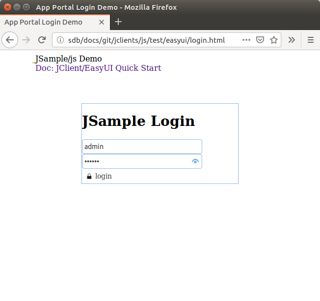

About The JSample Application
The JSample is an example showing how to use the jclent's JS API to visit the jserv.sample json data service. Before floing steps in this tutorial, you need to setup the sever. These 2 parts must work together though they can be deployed separately.
The jserv.sample is a SOA json service that can work together with any one or more following client. Please following the quick start doc to set up the server.
About JClient
JClient is the client side API for semantic-*, including:
- jclient.java, the java client
- jclient.js.vue, the vue components can communicate with sematic-*, based on jclient.js
- jclient.js.easui, the easUI API lib can communicate with sematic-*, based on jclient.js
- jclient.cs, the c# client
- jclient.js, the low level js client API for accessing service at jerver.sample.
It's for other presention extension, such as HandsonTable, wich is also been used in commercial project.
All the clients are tested together with jserv.sample (All? Not True) and can be configured to a different jserv.
The sample project's client side located in the jclient/test folder.
Some client implementation like the EasyUI version is implementated as a basic enterprise webapp's client, including a role based function previllege infrastructure and a cheap workflow extension. It's a good starting point for a commercial webapp.
jclient/js
jclient/js/vue
TODO ...
jclient/js/easUI
Prerequisites
- The jserv.sample server - see quick start here
- EasyUI (tested on 1.7.0 and 1.8.1), already included in test page
- JQuery newer than 1.8, already included in test page
Browsing the Jeasy Client Demo Pages
- Follow the jserv.sample quick start to deploy the server and make sure the server is allowing cross domain content accessing.
- Configure the jserv-sample url path in
jclient/js/test/easyi/jsample-easyui.jsReplace 'serv' with url path to your web application (e.g. jserv.sample);const jconsts = { ... serv: 'http://localhost:8080/jsample', conn: 'local-sqlite',
Replace 'conn' with your connection ID configured in 'your-web-app'/WEB-INF/connects.xml.
The default configuration should working if you didn't change any configurations. - Open login demo page:
jclient/js/test/easyi/login.html
- Login with 'admin:123456' and navigate through function pages.
Screenshots (click for large image):
jclient/java
If you'v tried js client, you may wonder is the protocol layer powerful enough for other runtime environment or programming languange. Try the jclient java version, have a look at the source.
Keep in mind that we won't change a single configuration at the server side.
Prerequisites
JDK 1.8
Run Junit4 Test Cases
- Make sure you configured a data connection for jserv.sample server.
This client will use the "orcl.alarm-report" connection as configured in connects.xml.
See the jserv.sample quick start, configure an oracle connection for java client testing. - git clone https://github.com/odys-z/jclient.gitThis will also clone other jclient version. We only needing the java folder here.
- Import The Eclipse Java Project
- Run Junit Test Case: io.odysz.jclient.SemantiClientTest